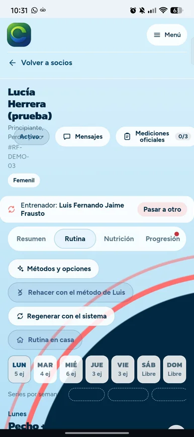

Hoy
Hoy

Propuesta
Lucía Herrera (prueba)
Activo ▾FemenilPrincipiantePerder peso7 días
#RF-DEMO-03 · entrena con Luis Fernando Jaime
Su rutina tiene 5 días y ella eligió 7.Puede ser una rutina de antes del cambio.
Esta semana
0 de 7 sesionesL23Clase
M24
M25Clase
J26
V27Clase
S28
D29
0sesiones en total
0%asistencia (4 sem)
—cambio de peso
Evaluación inicial
con la filosofía de Luis1 de 5 hechas
Peso, cintura y % de grasaEl % de grasa sale de la cintura
MovilidadSentadilla con brazos arriba, hombro y cadera · 5 min
Prueba cardiovascularEscalón de 3 minutos · 15 min
Cuestionario de saludLo llenó al registrarseHecho
Fotos de progresoFrente, perfil y espalda
Datos
Editar9:41
- Nombre a lo ancho; estado, sexo, nivel, objetivo y días como etiquetas, sin encimarse.
- Tres acciones iguales: Mensajes, Mediciones y Entrenador. Ya no se salen de la pantalla.
- Aviso cuando los días del socio no coinciden con su rutina.
- En la semana se ven sus días de clase grupal.
- Evaluación como lista de pendientes con avance; peso, cintura y % de grasa en un solo renglón.